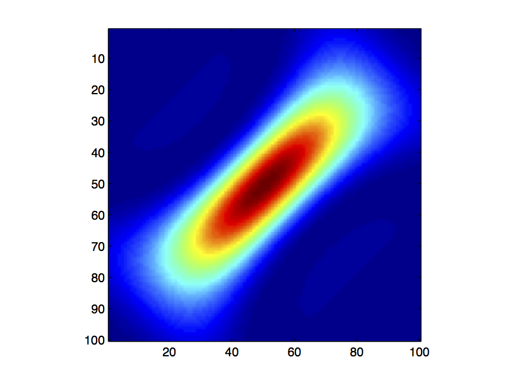
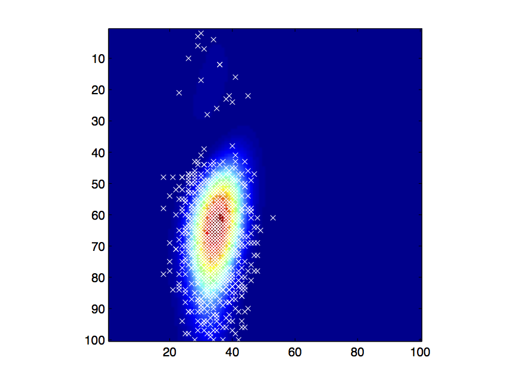
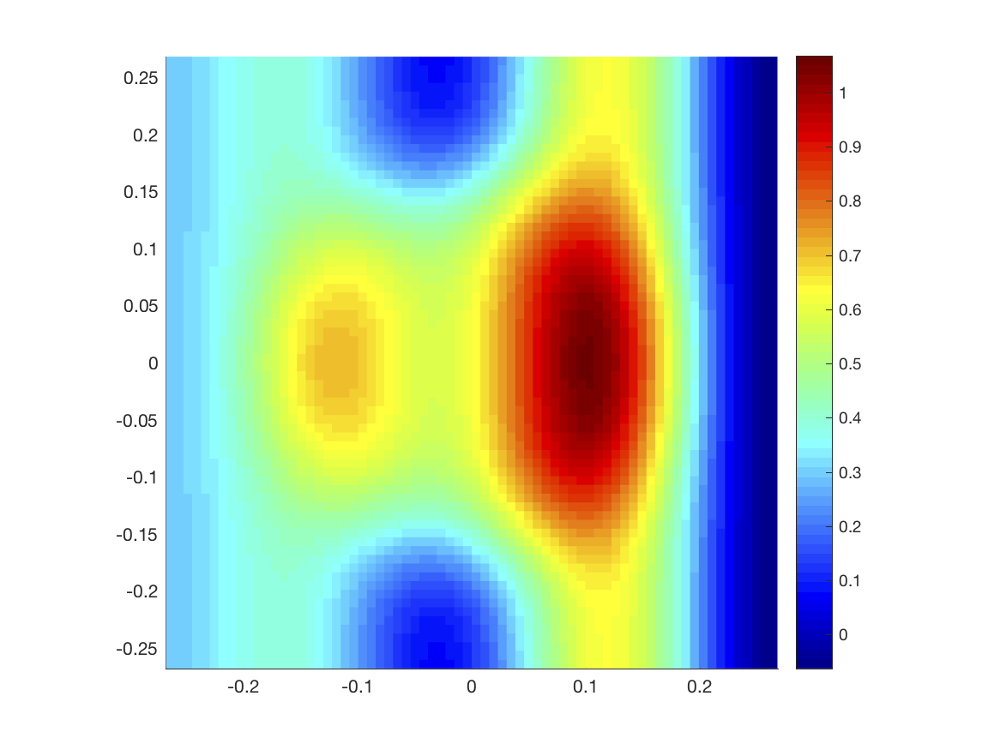
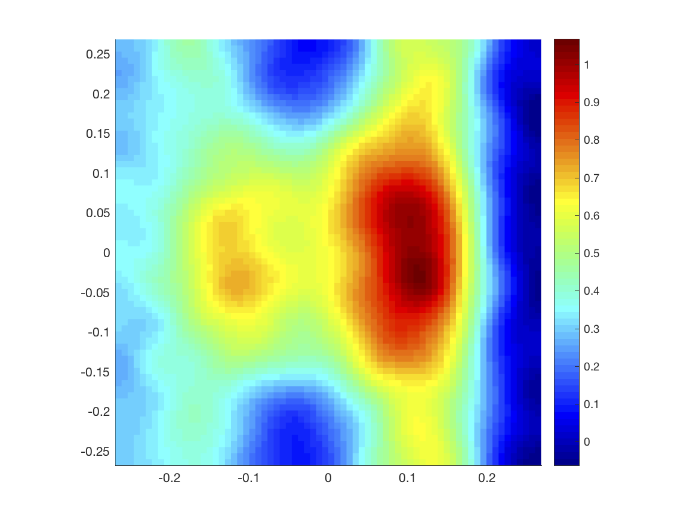

Randomised linear algebra for process analytics
Randomised algebra for real-time process analytics. This EPSRC funded project aims to explore tools in randomised numerical linear algebra in the numerical solution of partial differential equations and associated inverse problems. In principle, the aim is to replace deterministic floating-point operations with sample-based averages estimated by randomly selecting elements of the matrices and vectors involved. When optimally implemented, randomised algebra yields low dimensional ‘equivalent’ systems after a small amount of samples, leading to an estimated solution of low statistical error without performing any high-dimensional computations. 
{kind=link}
{kind=link}
An example illustrating a scheme for sampling-based estimation of matrix-vector multiplication. Consider for example the case of estimating c=x'A'Ax, where A is a matrix of smooth srtucture similar to the one depicted on the panel to the left but at arbitrarily large dimension, x is a Gaussian vector and prime denotes transposition. The result of this operation c can be computed deterministically by adding the elements of the matrix to the right that has a relatively small number of non-zero elements. If the matrix is extremely large and cannot be assembeled and stored then we can estimate c by simulation. Our quasi-Monte Carlo scheme based on important sampling principles allows to design sub-optimal sampling distributions. The white crosses on the left panel mark the sampled elements of the matrix to be sumed up.
N. Polydorides, M. Wang, and D. P. Bertsekas, "A Quasi Monte Carlo method for large scale inverse problems" in "Monte Carlo and Quasi-Monte Carlo Methods 2010", by H. Wozniakowski and L. Plaskota (eds), Springer-Verlag.
N. Polydorides, M. Wang, and D. P. Bertsekas, "Approximate Solution of Large-Scale Linear Inverse Problems with Monte Carlo Simulation", Lab. for Information and Decision Systems Report LIDS-P-2822, MIT, November 2009.
M. Wang, N. Polydorides, and D. P. Bertsekas, "Approximate Simulation-Based Solution of Large-Scale Least Squares Problems", Lab. for Information and Decision Systems Report LIDS-P-2819, MIT, September 2009.
Electromagnetic modelling, imaging and uncertainty quantification
The motivation comes from the Controlled-Source Electromagnetic Method (CSEM) that aims to detect and image hydrocarbon reservoirs by using electromagnetic field measurements to obtain information about the conductivity profile of the sub-seabed. In this context the source of uncertainty stems from our incomplete knowledge on the electrical properties of the underpinning low-frequency electromagnetic model. To estimate the model's response in terms of the induced fields and measurements we use a probabilistic description based on prior information and formulate a forward uncertainty quantification problem of characterizing the uncertainty in the PDE solution and observations in response to that in the parameters. Conversely, inverse uncertainty quantification encompasses the statistical estimation and imaging of the unknown electrical parameters from the available observations, which can be cast as a Bayesian inverse problem. The contributions of the project focus on examining the aforementioned forward and inverse UQ problems for the low-frequency, time-harmonic Maxwell equations, where the model uncertainty emanates from the lack of knowledge of the conductivity parameters.


A FEM solution depicting the electric field of a dipole source in the CSEM model. Notice the dipole is positioned near the seabed and which includes a conductivity inhomogeneity (in black). Although the fields penetrate to reach the inhomogeneity their magnitude diminishes exponentially away from the source. The graph to the right depicts the variance in the stochastic FEM solution corresponding to a similar source arrangement when the electrical properties of the model are not uniquely specified, e.g. they are modelled as lognormal random fields. Images taken from the thesis of D. Kamilis.
D. Kamilis, "Uncertainty quantification for low-frequency Maxwell equations with stochastic conductivity models" PhD thesis, School of Engineering, University of Edinburgh, 2018.
D. Kamilis and N. Polydorides, "Uncertainty quantification in the controlled source electromagnetic measurements", Presentation at MARELEC 2017, June 2017.
Gas imaging & spectroscopy
Gas imaging in the form of Chemical Species Tomography (CST) is a diagnostic modality for gases and other optically transparent fluids, based on measurements and models of spectroscopic absorption and laser attenuation. Although still in its early stages of development, CST is considered as an effective solution for imaging in-situ the concentration of chemical species such as pollutants in the exhaust plumes of gas turbines, aviation engines and power generators. Its application in the aerospace sector is motivated by the need to provide combustion diagnostics for jet engines in order to prevent malfunction and failure. At the same time, CST provides an adjunct tool for assessing the performance and environmental footprint of alternative, cleaner aviation fuels. Our efforts in this area are on imaging the species concentration and plume temperature from limited and sparse direct absorption and wavelength modulation spectroscopy data, using regularisation and Bayesian inferrence algorithms. This project is partially funded by an EPSRC platform grant in collaboration with coleagues from Strathclyde University.

D. Kamilis, "Uncertainty quantification for low-frequency Maxwell equations with stochastic conductivity models" PhD thesis, School of Engineering, University of Edinburgh, 2018.
D. Kamilis and N. Polydorides, "Uncertainty quantification in the controlled source electromagnetic measurements", Presentation at MARELEC 2017, June 2017.
{kind=link}
{kind=link}
To the left, a target CO2 concentration profile and to the right its reconstructed solution based on an algorithm involving subspace projection and regularisation discussed here. The image has 4900 pixels resolution and has been reconstructed from 126 noise-infused data, scattered among 6 projection angles.
N. Polydorides, S.A. Tsekenis, H. McCann, V.-D. A. Prat, P. Wright, "An efficient approach for limited-data chemical species tomography and its error bounds" in Proc. R. Soc. A 2016 472 20150875; DOI: 10.1098/rspa.2015.0875, 2016.
N. Polydorides, A. Tsekenis, E. Fisher, A. Chighine, H. McCann, L. Dimiccoli, P. Wright, M. Lengden, T. Benoy, D. Wilson, G. Humphries and W. Johnstone, Walter, "Constrained models for optical absorption tomography", Applied Optics, 57(7), B1-B9, 2018
Spectral X-ray tomography: combining reconstruction with classification
In this project, supported by Harris Corporation (US), we are investigating new image reconstruction approaches for X-ray tomography and non-destructive testing that utilise spectrally resolved photon absorption data. We are developing polyenergetic models that capture beam hardening phenomena to model the spectral absorption of X-rays as they propagate through media of approximately known mass attenuation coefficients. For the inverse problem we work to develop some new machine learning inspired approaches that unify image reconstruction and classification that can lead to image reconstruction from a small number of projections.
OUR SPONSORS